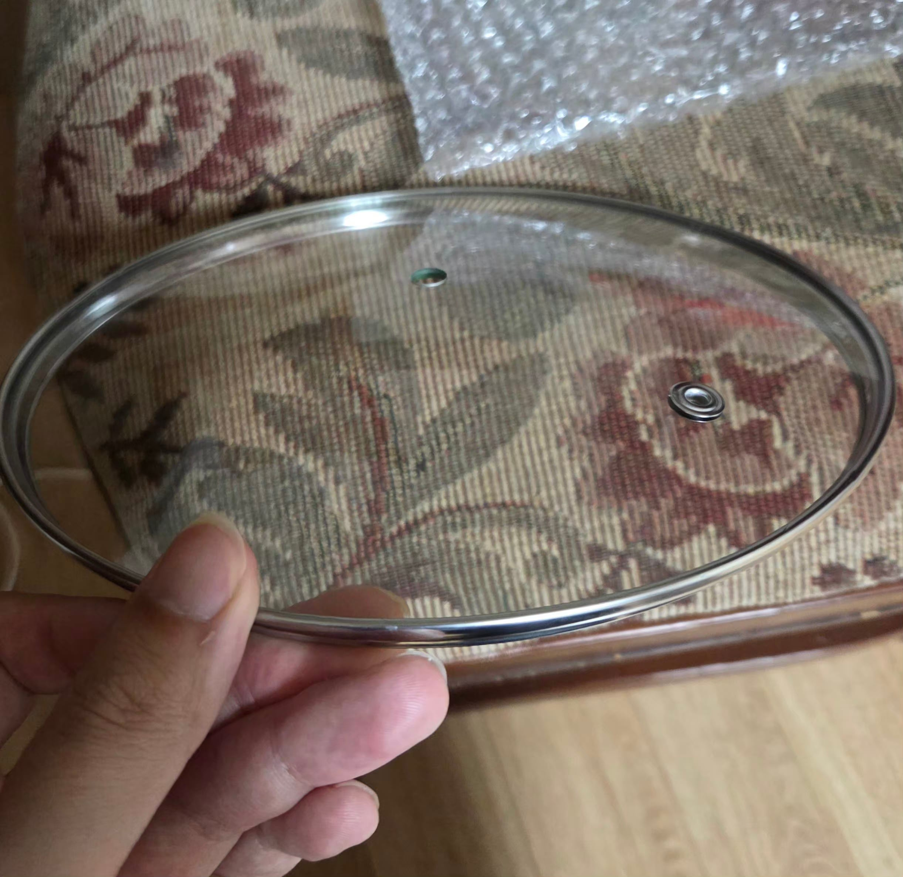
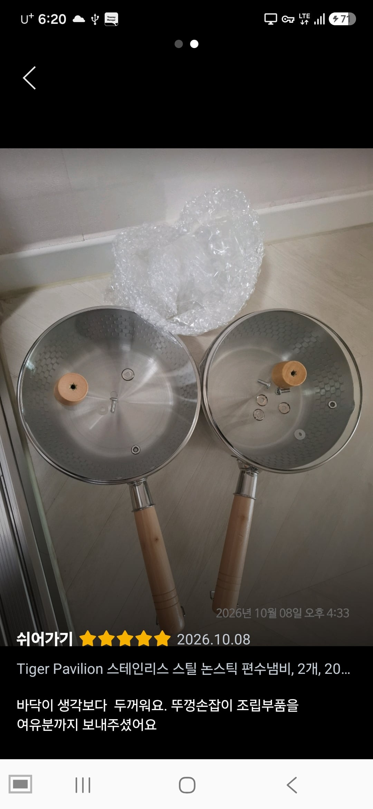
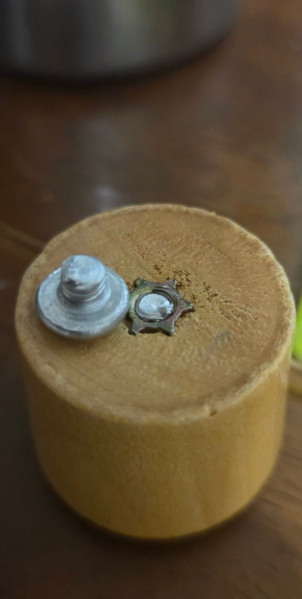

3일 기다리고 배송받음
= 냄비뚜껑 손잡이가 안옴

후기보니까 여기 2개 간것같음..
교환후 오늘까지 총 7일 걸쳐서 재배송 받음

ㅈㄹ ㅅㅂㅋㅋㅋㅋㅋㅋㅋㅋㅋ

3일 기다리고 배송받음
= 냄비뚜껑 손잡이가 안옴

후기보니까 여기 2개 간것같음..
교환후 오늘까지 총 7일 걸쳐서 재배송 받음

ㅈㄹ ㅅㅂㅋㅋㅋㅋㅋㅋㅋㅋㅋ
부속품 찾다가 뚜껑만 3천원에 사옴
바로 쓸려고 샀는데 내가 왜 다이소를 가야함 ㅋㅋㅋㅋㅋㅋ
바로 쓸거면 7일 기다리지말고 다이소에서 냄비를 사ㅠ
젓가락 낑궈서 들어 ㅎ
개인적으로 해외직구는 제품검수가 불안해서 안쓰게됨.
차라리 그냥 알리에서 사는게 맘 편함
요즘 쿠팡도 테무화되는중 ㅋㅋㅋ
요즘이 아니라 오리지널 테무임
알리 테무인데 더 비싸게 받는
심시어 배송 속도도 따라잡혔죠?
알리테무 택갈이 ㅋㅋㅋㅋㅋㅋㅋ
뭐야, 스탠다드 코리안 유통이잔아?
아예 중국에가서 중국인 판매자를 대대적으로 모으는 행사도 했잖음ㅋㅋ
쿠팡은 아예 공산품 아니면 잘 안삼ㅋㅋ..
ㅋㅋㅋㅋㅋㅋㅋㅋ
저게 야마자키 편수냄비엿나? 코스트코에파는데
스댕 냄비나 팬 바닥 두꺼우면 그나마 좋은거임
두껑 손잡이가 빙시 ㅋㅋㅋㅋ
중국산 볼트 진짜 가끔 어메이징한거 있더라
그냥 똑 뿌러지는거 많음
볼트는 원래 ㅈㄴ 강하고 질긴 자재를 가공해서 만드는데
이건 그냥 알루미늄 캐스팅해서 만든 볼튼가 싶을정도로 약하더러
쿠팡 로켓아니면 안씀
부러진 볼트 색부터 알미늄인디 ㅋㅋㅋㅋ
직구를 왜 쿠팡에서 하는 거야
로켓만 사라
담부터 판매자 과실이면 맞교환 신청 하지 말고 반품 접수 하고 새로 빨리 보내라고 해야댐 기달리는 시간도 구매자한테 손해 임
나도 쿠팡에서 딱 저리생긴거 샀는데 품질이 너무 구리더라.
뭘 끓여도 냄비가 타버림.
ㅋㅋㅋㅋ
저거 다이소에서 부속품 본거같은데